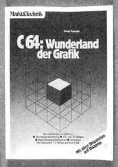
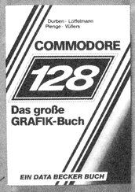
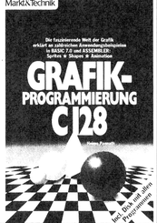

Bücher
C 64: Wunderland der Grafik

Den Lesern des 64’er-Magazins ist Heimo Ponnath wahrlich kein Unbekannter. Viele lesenswerte Beiträge von ihm haben sich mit den vielfältigen Möglichkeiten des C 64 im Bereich der Grafik beschäftigt. So freut man sich, Heimo Ponnath auch als Buchautor vorstellen zu können.
In erfreulich lockerer und verständlicher Sprache gibt er zunächst eine ausführliche Darstellung, was mit dem Grafikchip des C 64 alles möglich ist und wie man ihn programmiert. Theoretische Grundlagen und praktische Anwendungen sind so verständlich geschrieben, daß man das Buch jedem empfehlen kann, der sich ohne unnötige Mühe in dieses hochinteressante Thema einarbeiten möchte. Alle Kenntnisse, die man zur Grafikprogrammierung benötigt, werden dem Leser auf einfache Weise nahegebracht. Nichts wird als selbstverständlich vorausgesetzt. So wird die gesamte Speicherorganisation des C 64 gründlich durchleuchtet, das binäre und hexadezimale Zahlensystem als Grundlagen von Bitmanipulationen wird erläutert und die allgemeinen Grundlagen der Grafik-Programmierung werden erklärt.
Auf diesem soliden Fundament aufbauend, beschreibt der Autor in einem separaten Kapitel das Arbeiten mit »Hires-3«, einer zum Buch gehörenden Grafik-Erweiterung für das C 64-Basic. Diese Basic-Erweiterung, die natürlich auch auf der dem Buch beiliegenden Diskette enthalten ist, stellt zahlreiche neue Befehle zur Verfügung, mit denen das Schreiben guter Grafik-Programme fast zum Kinderspiel wird. Neben oft vermißten Befehlen wie RENUMBER, AUTO-NUMBER, DUMP oder MERGE gibt es in Hires-3 unter anderem einfache Möglichkeiten, um Linien, Rechtecke, Kreise und Ellipsen im hochauflösenden Modus zu zeichnen.
Ein zusätzlicher Leckerbissen für Besitzer eines Farbmonitors ist ein Programm, um 70 (!) unterschiedliche Farben auf den Bildschirm zu bringen.
Der Wert des Buches wird durch die beiliegende Diskette ganz beträchtlich erhöht. Man bekommt zum Nulltarif die Grafikerweiterung Hires-3, alle im Buch vorgestellten Programme und viele überzeugende Beispiele verschiedenartiger Grafiken.
(D. Hein/ev)Heimo Ponnath: C 64 — Wunderland der Grafik, Markt&Technik, 232 Seiten, ISBN 3-89090-130-1, Preis 49 Mark einschließlich Programmdiskette
Commodore 128 – Das große Grafik-Buch

Mit diesem runde 370 Seiten umfassenden Buch rückt ein Team von vier Autoren den Grafikeigenschaften des Commodore 128 zu Leibe. Drei große Schwerpunkte werden abgehandelt: der VIC II-Chip, der 80-Zeichen-VDC-Chip und schließlich allgemeine Grundlagen und Anwendungen der Grafikprogrammierung.
Besondere Schwerpunkte im ersten Teil des Buches bilden die Sprites, Zeichensatz-Modifikationen sowie natürlich die hochauflösende Grafik, insbesondere deren Programmierung in Maschinensprache. Leider orientiert sich dieser Teil des Buches recht stark am C 64-Modus, wie man überhaupt bei einer Reihe von Programmen im diesem Buch den dezenten Hinweis findet »Achtung, dieses Programm läuft nur im 64er-Modus«, was wahrscheinlich weniger eine Schleichwerbung für ein sehr bekanntes Computer-Magazin darstellen soll als einen dezenten Hinweis darauf, daß es sich dabei eigentlich um gar kein C 128-Programm, sondern um eines für den C 64 handelt.
Für den mehr an speziellen Eigenschaften seines C 128 interessierten Leser wird dann aber das folgende Kapitel über den VDC-Chip zur wahren Fundgrube an Informationen. Neben einer grundsätzlichen Darstellung der Arbeitsweise und Programmierung des VDC wird detailliert auf den Aufbau des internen VDC-Video-RAM, den Attribut-Speicher und den Zeichengenerator eingegangen.
Der letzte Teil des Buches liefert neben einigen allgemeinen Grundlagen auch eine ganze Reihe von Anwendungen der Grafikprogrammierung auf dem C 128. Als Stichworte seien hier nur Laufschrift, Sprite-Animation, Balken-, Kurven- und Kuchengrafiken genannt.
Fazit: Ein ausführliches und umfangreiches Werk, das alle Seiten der Grafik mit dem C 128 beleuchtet und insbesondere durch die vielen Beispiel-Programme auch für den Einsteiger sehr wertvoll ist. Eine Diskette mit allen Programmen kann zum Preis von 29 Mark zusätzlich angefordert werden.
(Anne Barth/ev)Axel Plenge, Ralf Durben, Klaus Löffelmann, Dieter Vüllers: Commodore 128 — Das große Grafik-Buch, Data Becker, 370 Seiten, ISBN 3-89011-154-8, Preis 49 Mark, Programmdiskette 29 Mark
Grafikprogrammierung C 128

Dieses brandneue Buch zum Thema Grafik ist speziell auf den Commodore 128 abgestimmt, viele der angesprochenen Themenbereiche (beispielsweise die Grafik-Befehle des Basic 7.0 oder der Umgang mit Shapes) sind aber auch für den Besitzer eines C 16 (oder auch C 116/Plus 4) interessant.
Als Autor dieses Buches zeichnet wieder Heimo Ponnath, bekannt durch zahlreiche Veröffentlichungen im 64’er-Magazin und in Happy-Computer sowie als Autor des Buch-Bestsellers »C 64: Wunderland der Grafik«. Wie man es von Heimo Ponnath nicht anders erwartet, ist auch das vorliegende Buch wieder eine wahre Fundgrube sowohl für den Einsteiger in die Grafikwelt, als auch für den fortgeschrittenen Anwender, der alle Fähigkeiten seines C 128 ausschöpfen möchte.
So hält sich das Buch denn auch nicht mit der Wiederholung altbekannter Grafiktatsachen beim C 64 auf, sondern wendet sich konsequent dem C 128-Modus zu. Die Möglichkeiten und Grenzen der im Basic 7.0 bereits vorgesehenen Grafikbefehle werden detailliert besprochen. Ein weiteres Kapitel beschäftigt sich mit der Programmierung von Sprites und Shapes und zeigt den sinnvollen Umgang mit den entsprechenden Basic-Befehlen auf. Viele Tabellen, Bilder und Beispielprogramme erleichtern dabei das Verständnis der im Text erklärten Zusammenhänge.
Wo das Basic 7.0 nicht mehr ausreicht, da wird zur Maschinensprache übergegangen. Einsteiger brauchen aber deshalb vor diesem Buch nicht zurückzuschrecken, denn die zumeist nur kleinen, aber sehr wertvollen Hilfsprogramme werden auf der dem Buch beiliegenden Diskette kostenfrei mitgeliefert — sie brauchen nur noch angewendet zu werden. Zu diesen Programmen gehören einige auch im Basic 7.0 leider fehlende Programmierhilfen wie eine OLD-Routine zum Retten von Basic-Programmen nach einem Reset oder eine MERGE-Funktion zum Aneinanderhängen von Programmen. Interessant ist auch ein Verfahren, mit dem die Befehle des eingebauten Maschinensprache-Monitors direkt in Basic-Programmen verwendet werden können.
Ein weiteres für den C 128-Besitzer sehr wichtiges Thema ist der für den 80-Zeichen-Modus verwendete VDC-Chip, der weit mehr kann, als nur Buchstaben auf dem Bildschirm erscheinen lassen. Dieses Buch zeigt, was alles im 80-Zeichen-Modus möglich ist, von hochauflösender Grafik bis zum selbstdefinierten Zeichensatz.
Ein interessantes Thema aus der neuesten Forschung sind die Fractals — merkwürdige geometrische Gebilde. Wie sie zustande kommen, was sie bedeuten und wie man sie programmiert, das erfährt man in einem weiteren Abschnitt.
Alles in allem handelt es sich bei diesem neuesten Werk von Heimo Ponnath wieder um ein bemerkenswert informatives Buch zum Thema Grafik, das in lockerer Sprache und leicht verständlich, aber niemals oberflächlich werdend, Auskunft gibt über alles, was mit der Grafikprogrammierung auf dem C 128 zusammenhängt.
Besonders erwähnt werden muß noch, daß eine Diskette mit allen Programmen und vielen Grafik-Demos dem Buch kostenfrei beiliegt.
(Anne Barth/ev)Heimo Ponnath: Grafik-Programmierung C 128, Markt&Technik, 240 Seiten, ISBN 3-89090-202-2, Preis 52 Mark einschließlich Programmdiskette